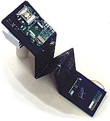

Requirements for Pledging
The requirements fall under four categories: General Meetings, HKN Hours and Events, Big/Little Hours, and Miscellaneous. The requirements for all four categories must be met to successfully pledge. Requirements vary based on current status as an undergraduate or graduate student.
Requirements for Undergraduates
Attend ALL general meetings (4 total) |
| General meetings are held Tuesday nights.
|
| Dates are available on our
calendar.
|
| If you cannot attend all of the meetings during the semester you are pledging
due to any conflict (including class or work), please contact the
recording secretary.
|
| Complete the following events and talks: |
| Six service hours (Habitat for Humanity, Introduce a Girl to Engineering Day, Explore UT, etc.)
|
| Five social events |
| Three society events (Tech Core Night, Peer Advising Night, Sig Party, Graduate Student Panel) |
| Two total of from the following: 1) fireside 2) tech talks |
| Two miscellaneous events (Service, Social, Society, Tech Talks) |
| One coffee chat or progress interview |
Some notes:
- Excess hours go towards the Best Pledge Award.
- Hours from previous semesters do not carry over to subsequent semesters if
you do not complete the pledge process.
- If you attend more than three society events, the excess hours will go toward your required social events.
| Fulfill Big/Little Requirements |
| Two Big/Little social event (these also count toward the 5 social requirement) |
| Note: Big/Little Requirements can be used for general requirements as well |
| Miscellaneous |
| Turn in a completed signature book at Smoker. Requirements are below. |
| Take and pass the pledge quiz |
| Attend Smoker |
| Attend Induction |
| Pay dues of $100. |
Requirements for Graduates
Attend two general meetings |
| General meetings are held Tuesday nights.
|
| Dates are available on our
calendar.
|
| If you cannot attend all of the meetings during the semester you are pledging
due to any conflict (including class or work), please contact the
recording secretary.
|
| Complete the following events* |
| Two social events |
| Two society event or one graduate project |
| Two miscellaneous events (Service, Social, Society, Tech Talks) |
| Fulfill Big/Little Requirements* |
| One Big/Little social event |
| Miscellaneous |
| Attend Smoker |
| Attend Induction |
| Pay dues of $100. |
Some notes:
- The pledge quiz will be given 30 minutes prior to the 3rd pledge meeting. Don't miss
it!
- SMOKER IS REQUIRED, so be sure to plan ahead.
- Remember, Smoker is the only time the president will sign your signature book.
- If you do not attend initiation, you cannot be a member of Eta Kappa Nu. Plan ahead!
- We collect one-time dues of $100 and send them to HKN National Headquarters.
- Membership dues include a lifetime subscription to The Bridge.
- If you have any concerns about dues, please feel free to contact an officer, and we can work something out.
Please note that some variations will occur from semester to semester, but
the basic pledge requirements will always be the same.
The Signature Book
| Required signatures |
| Two signatures from two of the three HKN Faculty Advisors |
| Two signatures from two of the three ECE Undergraduate Advisors |
| Five signatures from ECE faculty members |
| Nine signatures from all of the HKN officers |
| Ten signatures from active HKN members (not including the officers) |
| Ten signatures from pledges (not including yourself). |
| Total of 38 signatures. |
Guidelines
- The design of the signature book is up to you. It does not need to be in book form.
- Your name should be prominently located on your signature book.
- Be professional when asking for faculty or staff signatures (i.e. no scraps of paper). Introduce yourself!
- DO NOT WAIT UNTIL THE LAST MOMENT TO BEGIN COLLECTING SIGNATURES.
- A complete signature book (excluding the President's signature) is to be turned in at Smoker.
- You can get the President's signature only at Smoker.
- At the end-of-semester banquet, an award will be given for the best sig book.
Example Sig Books


Rosa M. Avilla, Spring 2003

Clarissa Lui, Fall 2002
Pledge Quiz
Here's a list of things to do and study in preparation for the pledge quiz:
- Navigate and learn our local chapter's website
- Navigate the National Headquarters'
website
- Learn some facts about HKN in general and our local chapter
- Know your officers
- Know your actives
- Know your fellow pledges
- Brush up on your lower-division course work
- Take a walk around the office and pay attention to details and be
observant
Don't sweat it if you don't pass. We might be inclined to give you another
chance!
Pledges Mailing List
Each semester we place all of our pledges on the pledges mailing list
in order to communicate with them during the pledge process. If you are
a pledge but are not on the pledges list please contact an officer to get yourself added.